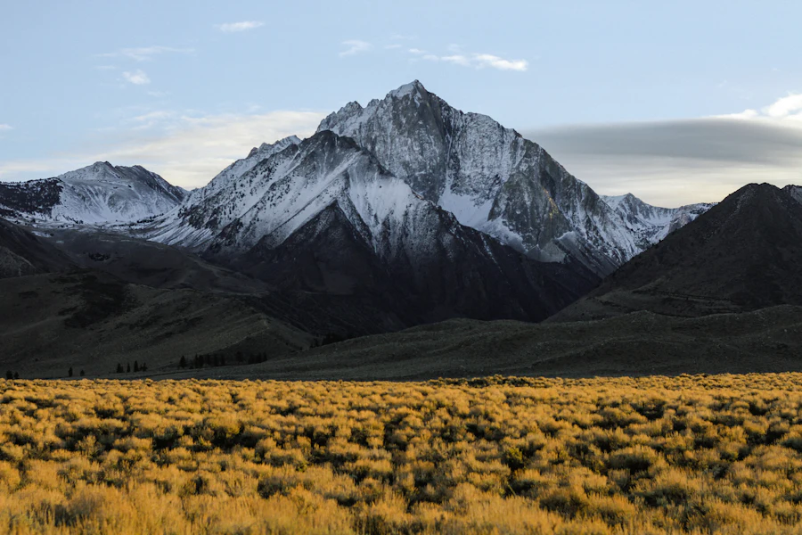
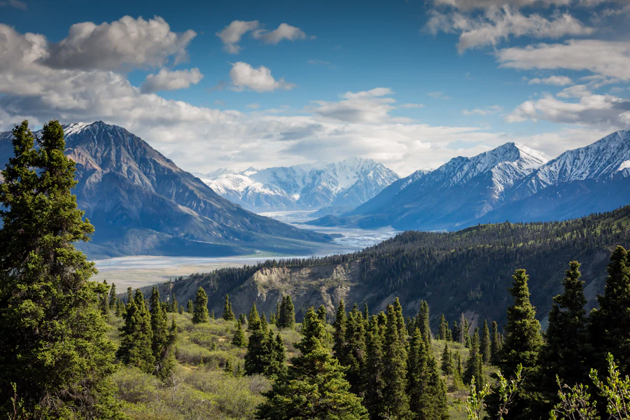
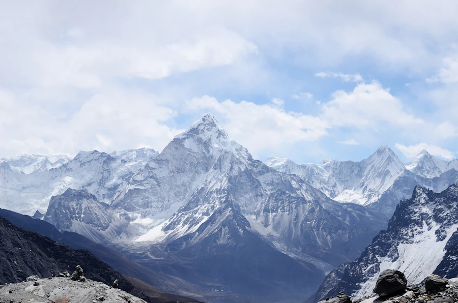

Alpine Ascents
Conquer the World's Greatest Peaks
Your ultimate guide to the most majestic mountains, legendary expeditions, and essential gear for high-altitude adventures.
About Alpine Ascents
Dedicated to the spirit of mountaineering and the pursuit of summits
Our Mission
Alpine Ascents is a comprehensive resource dedicated to the world of mountaineering. We document the planet's most iconic peaks, chronicle the rich history of alpine exploration, and provide essential knowledge for climbers at every level.
From the towering giants of the Himalayas to the technical challenges of the Alps, our platform brings together data, stories, and expertise to inspire the next generation of mountaineers. Whether you're planning your first trek or preparing for an 8,000-meter expedition, Alpine Ascents is your trusted companion.
We believe that mountains teach us resilience, humility, and the importance of preparation. Our curated content covers everything from peak profiles and historical milestones to gear reviews and safety education.
Safety First
Comprehensive safety guidelines, risk assessment resources, and emergency preparedness information for every climb.
Expert Knowledge
Curated content from experienced mountaineers, alpine researchers, and outdoor education professionals.
Community
Join a passionate community of climbers, hikers, and mountain enthusiasts from around the globe.
Education
In-depth learning resources on altitude science, weather patterns, navigation, and climbing techniques.
Types & Styles of Mountaineering
Understanding the diverse climbing disciplines, tactics, and ethical philosophies that define modern alpine ascents.
Alpine Style
A continuous, self-sufficient push from bottom to top without relying on fixed ropes, high-altitude porters, or bottled oxygen.
- Minimal Gear: Climbers carry everything needed on their backs in single packs.
- Speed is Safety: Spending fewer hours under active seracs and avalanche chutes.
- Zero Ecological Trace: No abandoned ropes, tents, or oxygen cylinders left on high ridges.
- High Commitment: Once high on the wall, retreat is complex and self-rescued.
Expedition (Siege) Style
A layered, pyramidal approach using established sequential camps, fixed lines, support teams, and contingency resources.
- Pyramid of Camps: Base Camp to Camp IV, stocked over weeks of ferrying loads.
- Fixed Safety Ropes: Continuous static lines through hazardous sections like icefalls.
- Supplemental Oxygen: Bottled O2 deployed in the death zone (>8,000m) to counter hypoxia.
- High Redundancy: Weather retreats allow rest at lower camps before renewed summit bids.
High-Altitude Alpinism
Navigating extreme altitudes above 5,000m to 8,848m, demanding cardiovascular endurance and acclimatization mastery.
Everest • K2 • AconcaguaTechnical Big Wall
Vertical to overhanging rock monoliths requiring aid climbing, multi-day portaledge camps, and precise friction footwork.
Trango Towers • Fitz Roy • El CapitanIce & Mixed Climbing
Scaling frozen vertical cascades, glacial couloirs, and blended rock/ice using dual front-points and curved technical ice axes.
Eiger North Face • Matterhorn • Grandes JorassesSki Mountaineering
Skinning up high glaciated peaks on skis followed by steep, technical 45° to 55° ski descents through couloirs and faces.
Mont Blanc Haute Route • Denali West ButtressStyle Comparison Matrix
| Metric | Alpine Style | Expedition (Siege) Style | Capsule / Big Wall | Ski Mountaineering |
|---|---|---|---|---|
| Pack Weight | Light (8–14 kg) | Heavy collective (>100 kg) | Variable (hauling bags 40–80 kg) | Medium (12–18 kg) |
| Speed on Wall | Very Fast | Slow & Methodical | Moderate Pitch-by-Pitch | High Descent Speed |
| Fixed Ropes | None (0 meters) | Extensive (1,000–4,000 m) | Working ropes only | None or rappel anchors only |
| Supplemental O2 | Forbidden by philosophy | Common above 7,500m | None | Rare |
| Environmental Footprint | Minimal / Zero | Significant | Localized | Clean & Fast |
World's Greatest Mountains
Explore the most iconic peaks across all seven continents — from the highest summits to the most technically challenging ascents.
Mountaineering History
A journey through centuries of human ambition, courage, and triumph in the world's greatest mountain ranges.
Climbing Techniques & Ropework
The physical proficiencies, footwork mechanics, and safety maneuvers required on technical alpine terrain.
Levels show the usual learning stage for each skill. These are overviews for understanding — not a substitute for instruction from a qualified mountain guide.
Glacier Travel & Rope Systems
Moving across glaciated terrain demands rigorous spacing, continuous rope tension, and immediate arrest capability when a snow bridge fails.
Crampon Footwork Mechanics
Efficient footwork conserves vital metabolic energy and prevents calf burnout on long, steep ascents.
SERENE Anchor Architecture
Every alpine anchor must satisfy the international SERENE standard to ensure total system reliability in sub-zero rock and ice.
Crevasse Rescue & 3:1 Hauling
When a partner falls into a crevasse, prompt execution of mechanical advantage hauling is required before hypothermia sets in.
Alpine Sheltering & High-Altitude Camps
From 4-season geodesic domes to emergency snow caves: surviving extreme weather, blizzards, and vertical nights.
4-Season Geodesic Tent
Crisscrossing aircraft-aluminum poles create an interlocking dome capable of shedding heavy snowfall and surviving 120+ km/h hurricane winds.
Emergency Snow Cave
Excavated into deep leeward snow drifts. Traps metabolic heat to maintain an interior temperature around 0°C even when outside wind chills plunge to -40°C.
Alpine Bivouac (Bivy) Sack
An ultralight, waterproof-breathable GORE-TEX outer shell slipped over a down sleeping bag for planned or unplanned nights perched on narrow ledges.
Big Wall Portaledge
A deployable aluminum frame cot suspended from a single anchor point on vertical or overhanging rock faces. Fitted with a storm fly for total rain and snow protection.
High-Altitude Mountain Refuges
Permanent stone and wood cabins operated by international alpine clubs (SAC, DAV, CAI, AAC) perched high on trade routes, providing bunkrooms, hot tea, and rescue radios.
Essential Equipment
The right gear can mean the difference between success and failure — explore the essential equipment for mountaineering.
Each card shows the category, a suggested minimum experience level, its typical use, and the routine care or safety check for that kind of gear. Levels are guidance for learning, not a certification standard.
Alpine Hazards & Risk Management
Objective and subjective dangers in extreme environments: identification, mitigation, and emergency action protocols.
Objective Hazards (Environmental)
Snow & Slab Avalanches
Slab avalanches occur primarily on 30° to 45° slopes when a cohesive snow layer slides over a weak crystalline base. Transceiver, probe, and shovel are non-negotiable.
- Perform stability tests (CT / ECT compression pits).
- Carry digital 3-antenna 457 kHz beacons.
- Avoid travel during rapid warming or heavy wind loading.
Seracs & Icefalls
Massive glacial towers (seracs) can topple unpredictably due to glacial flow gravity. The legendary Khumbu and K2 Bottleneck icefalls require calculated transit.
- Cross active icefalls at night (01:00–05:00) during freezing temperatures.
- Never linger, rest, or camp under active ice seracs.
- Move singly across precarious ladder bridges.
Rockfall & Freeze-Thaw
Solar warming melts interstitial ice holding scree and boulders to high alpine walls, triggering lethal stone avalanches down couloirs and gulleys.
- Compulsory CE/UIAA alpine climbing helmets at all times.
- Avoid staying in the fall line of other climbing parties.
- Climb rock gullies before direct morning sunlight hits the face.
Altitude Zones at a Glance
Zones are approximate and widely used in mountain-medicine literature. Individual response varies — this is general education, not medical advice.
High-Altitude Pathologies
Acute Mountain Sickness (AMS)
Common above 2,500m when ascending too fast. Symptoms resemble a severe hangover: throbbing headache, fatigue, dizziness, nausea, and insomnia.
High Altitude Pulmonary Edema (HAPE)
Fluid builds up inside air sacs in the lungs. Symptoms include persistent dry cough turning pink/frothy, severe breathlessness at rest, cyanosis, and chest congestion.
High Altitude Cerebral Edema (HACE)
Capillary leakage leads to severe brain swelling. Classic signs include ataxia (inability to walk a straight line), erratic confusion, hallucinations, and coma.
Emergency Response Protocol Checklist
When accidents or severe altitude illnesses occur on the mountainScene Safety
Assess overhead rockfall and avalanche hazard before approaching.
Check ABCs
Clear airway, monitor breathing and circulation; arrest major bleeding.
Thermal Buffer
Insulate patient from frozen snow using pads, sleeping bags, and bivy sack.
Trigger Satellite SOS
Transmit GPS coordinates, altitude, patient condition, and terrain via inReach or PLB.
Initiate Descent
Never wait for a delayed helicopter at high camp when gravity provides life-saving air pressure below.
General Guidelines & Alpine Ethics
Leave No Trace principles, high-altitude porter welfare standards, and international mountain etiquette.
The 7 Principles of Leave No Trace (LNT) in Mountain Ecosystems
Plan Ahead & Prepare
Know route weather patterns, avalanche forecasts, local permits, and emergency egress options.
Travel on Durable Surfaces
Stay on snow, ice, or established rock paths to protect delicate high-altitude mosses and tundra.
Dispose of Waste Properly
Pack out all trash, fuel canisters, and food waste. On glaciated routes, use specialized clean-waste WAG bags.
Leave What You Find
Respect historic route cairns, antique pitons, and natural geological formations without defacing rock.
Minimize Campfire Impacts
Never burn scarce alpine scrub or wood. Rely exclusively on self-contained liquid gas and isobutane stoves.
Respect Wildlife
Observe marmots, snow leopards, ibex, and lammergeiers from a distance. Store all rations in rodent-proof containers.
Porter & Guide Welfare Charter
High-altitude porters and Sherpa mountain guides shoulder extraordinary risks. Alpine ethics dictate strict adherence to the International Porter Protection Group (IPPG) standards:
- Load Limit Cap: Porter carry weights must never exceed 25 kilograms on standard expedition approaches.
- Equal Gear Standards: Adequate sub-zero boots, crampons, eyewear, and high-altitude shelters must be provided to all support staff.
- Fair Wages & Medical Insurance: Comprehensive health, evacuation, and life insurance coverage is an ethical obligation for every team.
- Equal Medical Treatment: Sick porters receive identical medical care and instant descent priority as foreign expedition clients.
International Alpine Distress Signals
When radios and electronics fail in remote valleys, standard universal optical and acoustic distress codes enable rescue coordination:
Distress Call (Need Rescue)
6 signals per minute (one whistle blast, flashlight beam, or mirror flash every 10 seconds), followed by a 1-minute pause. Repeat until acknowledged.
Acknowledgment of Distress Call
3 signals per minute (one blast or light beam every 20 seconds), followed by a 1-minute pause, signifying help is on the way.
Mountaineering Records
Remarkable achievements, fastest known times, and historic firsts in the world of mountaineering.
Expedition Success Stories
Defining triumphs in high-altitude exploration that expanded human horizons and mountaineering ethics.

8,848 m May 29, 1953Everest: Hillary & Tenzing
Southeast Ridge via Hillary Step
Under John Hunt's leadership, New Zealander Sir Edmund Hillary and Nepali Sherpa Tenzing Norgay climbed from the South Col to achieve humanity's first confirmed summit of the highest peak on Earth.
"It is not the mountain we conquer, but ourselves."

8,611 m July 31, 1954K2: The Italian Conquest & The Bivouac
Abruzzi Spur & 8,100 m Open Bivouac
Led by Ardito Desio, Lino Lacedelli and Achille Compagnoni summitted K2 on July 31, 1954. The triumph was made possible by 24-year-old Walter Bonatti and Hunza porter Amir Mehdi, who delivered oxygen to Camp IX. Stranded when Camp IX was moved higher, Bonatti and Mehdi survived an open bivouac at 8,100 m in -30°C without a tent. In 2007, the Club Alpino Italiano officially validated their decisive contribution.
"To live through a night on K2 at 8,100 metres without shelter was deemed humanly impossible, yet we were there, alive."
Everest Without Bottled Oxygen
Southeast Ridge / South Col
Medical scientists had asserted that human survival without supplemental oxygen was biologically impossible above 8,500m. Reinhold Messner and Peter Habeler proved them wrong, summiting Everest in pure alpine style on May 8, 1978.
"I was nothing more than a single narrow gasping lung, floating over the mists and the summits."
First Winter Ascent of Everest
South Col in Winter Gale
Polish 'Ice Warriors' Krzysztof Wielicki and Leszek Cichy conquered Mount Everest in the dead of winter under Andrzej Zawada's leadership, overcoming -42°C temperatures and hurricane-force jetstream winds to pioneer winter 8,000er climbing.
"Hello Andrzej! We are on the summit! If this wasn't Everest, we would never have endured it."
Project Possible 14/7: Speed Campaign
Himalaya & Karakoram Ranges (189 Days)
Former British Special Forces soldier Nirmal 'Nims' Purja and his Nepali team completed an unprecedented speed campaign climbing all fourteen 8,000-meter peaks in 189 days in 2019. Chronological terrain investigations by 8000ers.com noted that initial ascents on Manaslu and Dhaulagiri halted at foresummits; Purja later climbed all verified true summits in 2021.
"Giving up is not in the blood, sir. It's not in the blood."

8,611 m Jan 16, 2021First Winter Ascent of K2
Abruzzi Spur in Winter (-50°C)
Ten Nepali mountaineers joining forces under Nirmal Purja and Mingma Gyalje Sherpa conquered the final winter 8,000er on January 16, 2021. Ten meters below the summit, they stopped to regroup and stepped onto the summit together hand-in-hand while singing the national anthem of Nepal.
"We made the impossible possible together. K2 winter was the ultimate prize, achieved with brotherhood and pride for Nepal."
Organizations & Interactive Map
Key mountaineering organizations worldwide and an interactive map of major peaks and club headquarters.
Media Gallery
Breathtaking photography and expedition footage from the world's most spectacular mountain ranges.
Featured Mountaineering Documentaries
Conquering Everest: The Ultimate Human Challenge
K2: The Savage Mountain Expedition
Alpine Climbing: Moving Light Above the Clouds
Latest News
Stay updated with the latest developments in the mountaineering world.
Mountaineering Education
Essential knowledge and skills for safe and successful mountain adventures.
Plan Your Expedition
Prepare for your next adventure with a personalized mountaineering checklist.
This is a general packing guide, not a route plan. Equipment, permits and safety measures vary by mountain, route, season and guiding standards — always confirm with a qualified guide or the local authority.
Add your own item
Progress is saved in this browser only.
Contact Us
Have questions or want to get involved? We'd love to hear from you.
Your cart 0
Your cart is empty
Open any item in the equipment catalogue and choose Add to Cart to build your kit list.